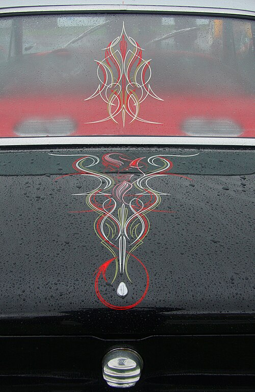

This site is about the art of pinstriping, a decorative painting technique used most commonly on signs, cars, and motorcycles. Mastering this art form requires specialized brushes, a steady hand control, and countless hours of practice to create smooth flowing lines. Symmetrical pinstripe designs are popular among the automotive culture with a rich history going back to the hot rod era of the 1940s and 50s. Luxury automotive manufactures Rolls-Royce, Bently, Ferrari, and Aston Martin still utilize pinstriping by skilled professionals on their production vehicles.
Learn more about the history of pinstriping